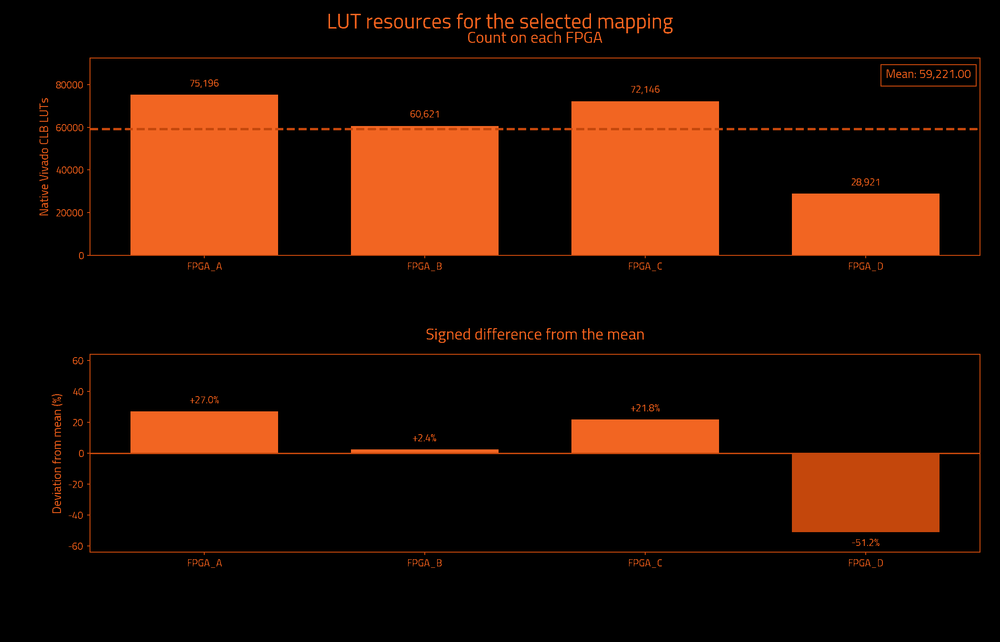
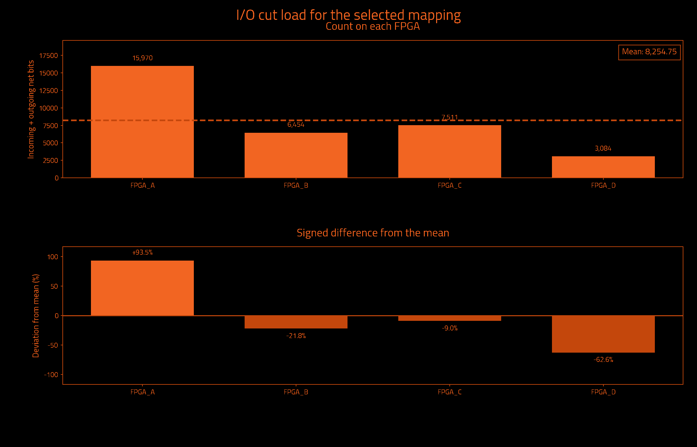
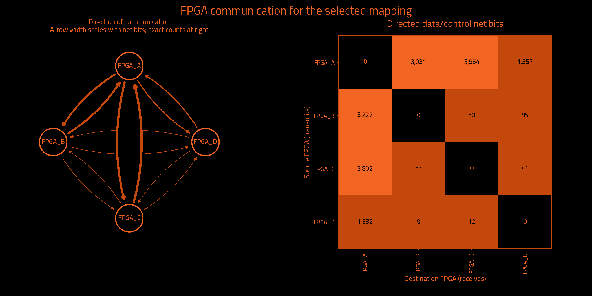

Historical measurements preserved by exact ownership equivalence · mapping.txt
Historical metrics preserved by exact ownership equivalence; not a fresh Vivado measurement.
| Selected partition | Result | Search | Result |
|---|---|---|---|
| FPGAs | 4 | Iterations requested | Unavailable |
| Native Vivado CLB LUTs | 236,884 | Iterations attempted | 5 |
| Unique data/control cut net bits | 16,216 | Selected iteration (zero-based) | 2 |
| Directed data/control net-bit pairs | 16,803 | Target board | j4.phd |
| Measurement | Result | Measurement | Result |
|---|---|---|---|
| Wall time | Unavailable | Observed CPU time | Unavailable |
| Average CPU cores | Unavailable | Average CPU use (one core = 100%) | Unavailable |
| Peak sampled process-tree memory | Unavailable | Frontend peak memory | Unavailable |
| Child processes observed | Unavailable | Sampling interval | Unavailable |
Measured through: Unavailable. CPU covers the frontend and observed descendants; sampling can miss short-lived work. Process-tree memory sums may count shared pages more than once.
No runtime measurement supplied.
Observed CPU time is a lower bound when short-lived processes escape sampling. Windows-host sampling excludes work inside WSL. Process-tree memory sums may count shared pages more than once.
| Logical FPGA | Native Vivado CLB LUTs | Device LUT utilization | Hard LUT cap | Outgoing net bits | Incoming net bits | Total I/O net bits |
|---|---|---|---|---|---|---|
| FPGA_A | 75,196 | 0.889% | 76,940 | 7,559 | 8,411 | 15,970 |
| FPGA_B | 60,621 | 0.717% | 76,940 | 3,361 | 3,093 | 6,454 |
| FPGA_C | 72,146 | 0.853% | 76,940 | 3,895 | 3,616 | 7,511 |
| FPGA_D | 28,921 | 0.342% | 76,940 | 1,401 | 1,683 | 3,084 |
| Logical FPGA | Target device | Registers | Block RAM tiles | DSP blocks | UltraRAM blocks |
|---|---|---|---|---|---|
| FPGA_A | xcvp1902 | 79,831 | 4.0 | 0 | 0 |
| FPGA_B | xcvp1902 | 57,305 | 0.0 | 0 | 0 |
| FPGA_C | xcvp1902 | 68,198 | 0.0 | 0 | 0 |
| FPGA_D | xcvp1902 | 27,207 | 0.0 | 0 | 0 |



| Measurement | Before local cleanup | Selected result |
|---|---|---|
| Worst minimum physical link hops without a register | 3 | 3 |
| Worst FPGA boundary crossings without a register | 3 | 3 |
| Extra crossings summed over modeled endpoints | 43,831 | 31,342 |
| Combinational primitives on transit paths | 7,470 | 6,193 |
| Directed hypergraph transfers | 15,506 | 16,800 |
| Sampled source timing paths scored | Unavailable | 1,000 |
| Weighted cost on sampled source timing paths | 589.9085835087244 | 350.8142431563009 |
| Signal category | Unique crossing net bits | Directed net-bit pairs |
|---|---|---|
| Data and functional synchronous control | 16,216 | 16,803 |
| Clock only | 1 | 3 |
| Reset only | 109 | 109 |
| Iteration | Result | Worst register-free crossings | Extra endpoint crossings | Transit primitives | Hypergraph transfers | Utilization imbalance |
|---|---|---|---|---|---|---|
| 0 | Rejected: hard LUT cap exceeded | 4 | 33,898 | 10,293 | 15,982 | 30.37% |
| 1 | Not selected | 4 | 30,686 | 8,080 | 16,800 | 26.39% |
| 2 | Selected best accepted mapping | 3 | 31,342 | 6,193 | 16,800 | 26.98% |
| 3 | Rejected: hard LUT cap exceeded | 3 | 32,560 | 7,724 | 16,800 | 31.49% |
| 4 | Rejected: Command failed (1); C:\Users\Wrelks\Desktop\upgrade_partitioner_handle_large_designs\work\a5e\k4\v5a\candidate_04\partition.log + Label Propagation = 0.21742 s + Rebalance = 0.0100752 s + Initialize FM Refiner = 2.17e-05 s + FM = 65.3054 s + Initialize Data for Unc. FM = 0.0138827 s + Collect Border Nodes = 0.0132822 s + Find Moves = 65.2762 s + Rollback to Best Solution = 0.0014445 s + Projecting… | Unavailable | Unavailable | Unavailable | Unavailable | Unavailable |
| Measurement | Meaning |
|---|---|
| Worst minimum physical link hops without a register | Lower bound from the declared topology, not a routed transport path. |
| Worst FPGA boundary crossings without a register | Largest ownership-change count on a modeled combinational path. |
| Extra crossings summed over modeled endpoints | Crossings beyond the first, summed over endpoints; not a distinct-net count. |
| Combinational primitives on transit paths | Logic that receives and forwards a remote signal without register capture. |
| Directed hypergraph transfers | Destination partitions beyond the first, summed over modeled hyperedges. |
| Sampled source timing paths scored | Exported Vivado timing samples, not all-path timing closure. |
| Weighted cost on sampled source timing paths | Relative ranking cost, not measured transport delay or DUT frequency. |
I/O cut load counts one outgoing multicast net once at its source and once at each receiving FPGA. Clock-only and reset-only nets are separate. Counts describe logical payload, not physical package pins or a pinmux ratio. External top-level ports have no invented FPGA home. Hypergraph transfers differ from the full net-bit census.
Deviation is 100 × (FPGA count / mean − 1); all-zero designs have 0% deviation. Device utilization and hard LUT caps are separate. Before local cleanup means this selected candidate before refinement, not necessarily the first iteration. More iterations can improve a result; the best accepted candidate is retained.
Timing sample coverage: exported sampled native setup paths only; not all-path STA. Path model: primitive conservative data arcs; top IO has no FPGA home. These are source-model measurements, not achieved hardware timing.
| Logical FPGA | Physical location | Selected direct neighbors |
|---|---|---|
| FPGA_A | C01/S01/E | 3 |
| FPGA_B | C01/S01/F | 3 |
| FPGA_C | C01/S01/G | 3 |
| FPGA_D | C01/S01/H | 3 |
| FPGA | Neighbor | Declared lanes | Wires at topology minimum compression |
|---|---|---|---|
| FPGA_A | FPGA_B | 16 | 1,024 |
| FPGA_A | FPGA_C | 16 | 1,024 |
| FPGA_A | FPGA_D | 16 | 1,024 |
| FPGA_B | FPGA_C | 16 | 1,024 |
| FPGA_B | FPGA_D | 16 | 1,024 |
| FPGA_C | FPGA_D | 16 | 1,024 |
The communication matrix shows signal demand. Declared links guide optimization; transport routing and physical bandwidth allocation happen later.
Resources describe original synthesized logic; future wrapper and transport resources are excluded. Mapping format, ownership and hard capacity checks are acceptance gates. Downstream regroup and hardware validation are separate.
{
"status": "HISTORICAL_METRICS_PRESERVED_BY_EXACT_OWNERSHIP_EQUIVALENCE",
"backend_version": "1.6.2",
"partition_preset_requested": "default",
"frontend_sha256": "d4dd69ef7849e0e5770e1ea0173f2106b1f1ec13ccc9303f7e8eaf9f3bc7237c",
"native_timeout_seconds": 7200.0,
"native_timeout_scope": "persistent checkpoint startup and each resource request; batch commands unaffected",
"topology_sha256": "b8a7099327cdefae84801c6f37374c794417239c551e8990bedc444e76b8e211",
"topology_source_sha256": "6f393e7eee76cbf20cd96e46f52c8c0a34be2365c7222aa6cf7abfe87c7e1b83",
"fpga_count": 4,
"native_backend_invoked": true,
"preferred_native_balance": 0.2,
"selection_policy_version": 3,
"native_balance_absolute_tolerance": 1e-12,
"effective_solver_epsilon": 0.3,
"effective_refiner_scalar_balance": 0.3,
"native_balance_search_envelope": 0.3,
"target_capacity_dependency_manifest_sha256": "18a3ac71857350176b8d15449e6cf21f106a9c902bd439a5a7d9d722c218d2c3",
"target_capacity_dependencies_sha256": {
"C:\\Users\\Wrelks\\Desktop\\upgrade_partitioner_handle_large_designs\\RapidWright\\scripts\\partition\\target_capacity.py": "652db231c4c19cfb2aa7bea140c1184d6f51162be857358b94152b3a2661f992",
"C:\\Users\\Wrelks\\Desktop\\upgrade_partitioner_handle_large_designs\\topologies\\j4_board_topology.json": "6f393e7eee76cbf20cd96e46f52c8c0a34be2365c7222aa6cf7abfe87c7e1b83",
"C:\\Users\\Wrelks\\Desktop\\upgrade_partitioner_handle_large_designs\\topologies\\j4_board_topology.json.targets.json": "25db82ebe61166d1d1998042eaa07ad9c843238119e5dd6e16e70695249afcd4",
"C:\\Users\\Wrelks\\Desktop\\upgrade_partitioner_handle_large_designs\\RapidWright\\scripts\\partition\\part_catalog\\vivado_2025_1_parts.tsv": "a402de944fbd660743f6a7ff12403060e886627439826186600da78618e6a1fe",
"C:\\Users\\Wrelks\\Desktop\\upgrade_partitioner_handle_large_designs\\RapidWright\\scripts\\partition\\part_catalog\\vivado_2025_1_parts.tsv.identity.json": "c5937f61bb02a289745eee9e8cc359b56692ed908e206cf549830da035957707"
},
"effective_logical_balance": 0.5,
"logical_balance_policy": "automatic_uniform_or_unspecified_native_caps",
"logical_balance_requested": null,
"logical_resource_capacities_explicit": false,
"engine_manifest_sha256": "b64272b8c469cffdf98ea76b1afcae5799a0fa0bc63d855ece820af18d841f8a",
"source_pair_association": {
"version": 1,
"mode": "supplied_manifest_legacy",
"original_receipt": "C:\\Users\\Wrelks\\Desktop\\upgrade_partitioner_handle_large_designs\\LSUT_2\\work\\partition_experiment\\aes64_96951b4_reference\\export_receipt.json",
"receipt_snapshot": "C:\\Users\\Wrelks\\Desktop\\upgrade_partitioner_handle_large_designs\\work\\a5e\\k4\\v5a\\inputs\\source_pair_receipt.json",
"original_receipt_sha256": "51706b8a9698d70d0b4b27916824b373e4d04003fe5670dbd1d3e8bd9ba2b9dd",
"receipt_snapshot_sha256": "51706b8a9698d70d0b4b27916824b373e4d04003fe5670dbd1d3e8bd9ba2b9dd",
"input_edif": "C:\\Users\\Wrelks\\Desktop\\upgrade_partitioner_handle_large_designs\\LSUT_2\\work\\partition_experiment\\aes64_96951b4_reference\\post_synth.edf",
"input_edif_sha256": "7fc2948596c3830462964176aa70a8cc2c794cb0c77c0b7a3d30adb6924a8d78",
"checkpoint": "C:\\Users\\Wrelks\\Desktop\\upgrade_partitioner_handle_large_designs\\LSUT_2\\work\\aes_farm\\partition_input_c64_96951b4\\mapped.dcp",
"checkpoint_sha256": "b70f97edb03784c4c50bf3d5de1c434666f8929e9acdb2f9d4de2e77a8933300",
"native_primitives": "C:\\Users\\Wrelks\\Desktop\\upgrade_partitioner_handle_large_designs\\LSUT_2\\work\\partition_experiment\\aes64_96951b4_reference\\leaf_primitives.tsv",
"native_primitives_sha256": "6ab9a32004084fa5edf922a5e353fbc3b101a00063cd318309d4fa31fd152fa3",
"producer_evidence_verified": false,
"export_run_association": "Supplied PASS manifest asserts one export association; producer command, actual native exit0 and completion are not verified",
"scope": "Exact payload and receipt-byte consistency; no arbitrary EDIF/checkpoint electrical-equivalence or cryptographic-authenticity proof"
},
"source_pair_provenance_sha256": "ef546a4a7f0da2e22ff471e4a0ba5c41e0af1ee4998a890a995a8040aaee05f9",
"java_heap": "16G",
"expanded_native_leaf_count": 517544,
"timing_guidance": "sampled_source_STA",
"timing_paths_sha256": "a02b76c832188b1d274719404fb4bc193374bac7e8d14b7f6b9b90df68af4f38",
"extra_delay_ns_per_crossing": null,
"native_artifact_storage": "verified_lossless_compression",
"native_oracle_mode": "persistent_original_checkpoint",
"native_residency_policy": "Probe after Java; retain only when measured available RAM covers the next heap, 8 GiB overhead and a prior-HGR native solver reserve",
"native_residency_decisions": [
{
"iteration": 0,
"stage": "after_java",
"available_bytes": 108821704704,
"decision": "load_native_probe"
},
{
"iteration": 1,
"stage": "before_java",
"available_bytes": 104212557824,
"prior_hgr_bytes": 14137615,
"native_solver_reserve_bytes": 2599887328,
"decision": "retain"
},
{
"iteration": 2,
"stage": "before_java",
"available_bytes": 104054185984,
"prior_hgr_bytes": 14293894,
"native_solver_reserve_bytes": 2604888256,
"decision": "retain"
},
{
"iteration": 3,
"stage": "before_java",
"available_bytes": 103777521664,
"prior_hgr_bytes": 14293894,
"native_solver_reserve_bytes": 2604888256,
"decision": "retain"
},
{
"iteration": 4,
"stage": "before_java",
"available_bytes": 104061620224,
"prior_hgr_bytes": 14293894,
"native_solver_reserve_bytes": 2604888256,
"decision": "retain"
}
],
"native_oracle_scripts_sha256": {
"C:\\Users\\Wrelks\\Desktop\\upgrade_partitioner_handle_large_designs\\RapidWright\\tools\\native_resource_session.py": "caa467021ca9a907b233f52d086d2a5858b08111ba950b718273964f36bd0ca5",
"C:\\Users\\Wrelks\\Desktop\\upgrade_partitioner_handle_large_designs\\RapidWright\\tools\\resource_session.tcl": "dc660b593517075ee79bc42487cdeff95b075cc8f1fc1edbd041e05d9ba17d2a",
"C:\\Users\\Wrelks\\Desktop\\upgrade_partitioner_handle_large_designs\\RapidWright\\tools\\report_partition_resources.tcl": "255ddb495ba953f77a19a373481cbfbde7ca2f127c6f595764b2a101a817ef38",
"C:\\Users\\Wrelks\\Desktop\\upgrade_partitioner_handle_large_designs\\RapidWright\\tools\\archive_native_request.py": "1053024a0794942eeb12bcdd77827541220f05d7355089f8113cac90f42eeb6b"
},
"capture_cohort_cleanup": {
"requested": "off",
"effective": "off",
"backend_supported": true,
"reason": "requested_off"
},
"native_feedback_quality_guard": "accepted_mapping_anchor",
"quality_guard_policy": "ranked",
"minimum_link_hop_analysis_available": true,
"selected_iteration": 2,
"native_cap_check": "PASS",
"native_balance_target_met": false,
"preferred_native_balance_target_met": false,
"native_search_envelope_met": true,
"new_policy_complete_within_search_envelope": true,
"source_input": "C:\\Users\\Wrelks\\Desktop\\upgrade_partitioner_handle_large_designs\\LSUT_2\\work\\partition_experiment\\aes64_96951b4_reference\\post_synth.edf",
"source_sha256": "7fc2948596c3830462964176aa70a8cc2c794cb0c77c0b7a3d30adb6924a8d78",
"checkpoint_sha256": "b70f97edb03784c4c50bf3d5de1c434666f8929e9acdb2f9d4de2e77a8933300",
"native_inventory_sha256": "6ab9a32004084fa5edf922a5e353fbc3b101a00063cd318309d4fa31fd152fa3",
"hard_native_clb_lut_caps": {
"FPGA_A": 76940,
"FPGA_B": 76940,
"FPGA_C": 76940,
"FPGA_D": 76940
},
"selection_policy": "Hard capacities and one cut/topology budget; complete paths; worst minimum-link hop lower bound, logical register-free crossings, sampled source timing cost, endpoint excess, transit; native search-envelope limitation tier, transfers, topology cost, then fine balance; preferred balance remains soft",
"minimum_link_hop_scope": "Declared selected adjacency shortest-link lower bounds; not actual transport routing, congestion or nanoseconds",
"scope": "Original synthesized netlist subset utilization; no future wrapper/transport resources included",
"accepted_mapping_sha256": "8939662e82c3bf0df6a9774aaaa1f7a5dcafc02d2575860be9c46a4d32d481c1",
"historical_metrics_scope": "Original native and source-graph measurements preserved by exact ownership equivalence; not rerun"
}{
"vivado_resources.tsv": "ad32cbfee0d22536e5dcb5973c83f2afc899a61a257e3b0e5f44822079002d6e",
"lut_report.txt": "2c38b990481b3099bea328d345c742b803e58b139b77d9544c2aca072636ab1b",
"fpga_control_categories.tsv": "27897dde642299ca6dcb1b5a2504cb68ef21c0a89bf98e158a03c83875a07df7",
"hardware_quality.txt": "218d44a469f1eead0017a85c6829e8099d31266bf4e78dc086f88646f32265dd",
"run_provenance.json": "bfcbc6290f946572699716008776d7f1c98feafebe543d88c111ad130daaca45",
"target_capacity.json": "9412a29cad749ee582373950b556d24806a8068e0ef0f05e97edbb3220896367",
"native_lut_caps.tsv": "9e2e3b8bec43b9079524bd53d5b4980d16c80c084d4017b3eb24ef504ee4e47b",
"cells.txt": "75920e73f2af56d80cff5ff9a3f643c67cb3a98f7161e0ecd67a62deecaf9e5c",
"topology_manifest.json": "2d00fda6f8321f4db9e89688e46e2aa41e61e271091cc9d7b8d2f3d442260f96"
}{
"status": "HISTORICAL_METRICS_PRESERVED_BY_EXACT_OWNERSHIP_EQUIVALENCE",
"fresh_native_measurement": false,
"historical_mapping_sha256": "5557dfb34e40a282e7a84127f4e24f416d8f3bf6de4b938e4d078d67810aeac2",
"successor_mapping_sha256": "8939662e82c3bf0df6a9774aaaa1f7a5dcafc02d2575860be9c46a4d32d481c1",
"functional_leaves_compared": 517282,
"ownership_mismatches": 0,
"top_port_owner_unchanged": true,
"source_edif_sha256": "7fc2948596c3830462964176aa70a8cc2c794cb0c77c0b7a3d30adb6924a8d78",
"source_checkpoint_sha256": "b70f97edb03784c4c50bf3d5de1c434666f8929e9acdb2f9d4de2e77a8933300",
"proof_files_sha256": {
"prior_native_evidence.json": "037a57495b97446312cec01d1c2bb51548756c793a24670b388db78e6c9966e5",
"reencoding_equivalence.json": "eeea3759e7f55a18427babe69a0a5682f9d98aac7803d1aca8e17e04c99a29ae",
"mapping_contract.json": "dde47451dbbeb52a5b66945bf6e78ae2b52eaacdea4cee5584986402c0be1ed2",
"mapping_records.tsv": "d4efc99922945494b8d1f3defd16996e9d1c38a52417d3e352ae5281c2767251",
"mapping_ownership.tsv.gz": "b6b08bca32e50978ddfba098454b7c18910416e82726975b546ced232b8a91c2"
},
"historical_artifact_sha256": {
"cells.txt": "75920e73f2af56d80cff5ff9a3f643c67cb3a98f7161e0ecd67a62deecaf9e5c",
"endpoint_kind_diagnostic.tsv": "de4c08d8d3732140c5672b6a0372da1460e2d769fd394e13de28394e2ad92738",
"final_assignment.part": "505fe5f142baf3c1fc5eb2e7b9b73c7f09a14f8b439f4e0e96d4463486266fec",
"fpga_control_categories.tsv": "27897dde642299ca6dcb1b5a2504cb68ef21c0a89bf98e158a03c83875a07df7",
"fpga_devices.tsv": "a62a6e290a0030facec4070d0547e7f82a4bab734493a6771ff95995984fed61",
"fpga_io_cuts.txt": "fc641028e2333da38bebba48a3221006947e16ac555c49a8c7c0a8aef72cca38",
"fpga_net_crossings.tsv": "881ba97ff77a9a53b1437e9aded3d2ac33716c61cc46a0b34f6c2bd20c92779e",
"hardware_quality.txt": "218d44a469f1eead0017a85c6829e8099d31266bf4e78dc086f88646f32265dd",
"identity.json": "552381c55ed5bef9c5cf2922740e0bad38ea47c11290502766c8e3a54bbae66b",
"io_cuts.txt": "afa193061cb2f7f0bde1980ae1b514a8e4d425d7e39b147b0a7c96af25a8aed8",
"logical_lut_report.txt": "64334eaadf4be65347b343b0d573e0484fc90c91d841101b317cd74d017d8526",
"logical_resources.tsv": "aa75e1b43f120909c089764e4abddbff663dc9a4f49c6e8ef430b82630fe976c",
"lut_report.txt": "2c38b990481b3099bea328d345c742b803e58b139b77d9544c2aca072636ab1b",
"mapping.txt": "5557dfb34e40a282e7a84127f4e24f416d8f3bf6de4b938e4d078d67810aeac2",
"metric_definitions.txt": "28c1e87b6c622b819cb9908f3ad9f58277331314f7be645e2b80c10d99238ba8",
"native_candidates.tsv": "e6617b0c51107820545c4fabe563ca88064e460abba1f79c563d23aa9c6a35df",
"native_complete.txt": "1b79b23fcd18600b8243d28e3e5d94f053b97af7b087cb50895f69c3794e4477",
"native_lut_caps.tsv": "9e2e3b8bec43b9079524bd53d5b4980d16c80c084d4017b3eb24ef504ee4e47b",
"parity_audit_final/00_complete_cut_category_parity.json": "23f829a4aedc5a3af7ad82b563999e8e947b4937bd731ffcec3e3a19c8eab2be",
"parity_audit_final/01_comparison_receipt.json": "bd06edb2dfedfad7b7d09a8cb8c80859d93822d727da24d1a8292d5ebdec18e0",
"parity_audit_final/02_root_compare_k4_v5a.json": "58eaada68177d0f6cdc3e18325915d57f27dd0a38496f21a066271e955528742",
"parity_audit_final/03_metadata_receipt.json": "da3a54f37cd8e4a7b136e345c21f368cf4fa19f3ff53cc0a20309934048f98a2",
"parity_audit_final/04_comparison_inputs.json": "a5233f9615322f17d80a2661d4e01a0334069fd22702d5506add5a3bda5d3750",
"parity_audit_final/05_owned_process_receipt.json": "56d0ce86de852ace54e7e1a89a1c46190a553e64747820eb0d71b6c5e0cf4e67",
"parity_audit_final/compact_mapping_audit.json": "d5ed3674b92770490ecf52994b1a48b86152227ba9559beaf389219d22f8a1d2",
"parity_audit_final/identity_receipt.json": "fb82e476dad3d32e4337ce72e24b59f178d0a7447edd5b60aa4f0b12b4c2cdf2",
"primitive_counts.tsv": "034ee8a3e347d134357be6897115efd530da6a9ebfd7e75ff4eec5856390f787",
"QUALIFICATION.json": "13ca643743c0fc3b8cfd807c54fb8dfc7f7d1013081530fce1a4b2f4e15662d4",
"refinement_passes.tsv": "1038d339f1c5433a5833514dc166b4811465eff47d222fbc8988813d0132fa06",
"run_provenance.json": "bfcbc6290f946572699716008776d7f1c98feafebe543d88c111ad130daaca45",
"source_mapping.txt": "5557dfb34e40a282e7a84127f4e24f416d8f3bf6de4b938e4d078d67810aeac2",
"STATUS.json": "14acde1a4f8ee0c1156affec477a3f082dc0a3e61b3a8664bc544fa2b1f8d18e",
"swap_refinement_passes.tsv": "c70c84cbc2dd542eb18431ec26dec22952415cfccf87a1c8a567d59bb3eb684b",
"target_capacity.json": "9412a29cad749ee582373950b556d24806a8068e0ef0f05e97edbb3220896367",
"target_capacity_dependency_manifest.json": "18a3ac71857350176b8d15449e6cf21f106a9c902bd439a5a7d9d722c218d2c3",
"topology_manifest.json": "2d00fda6f8321f4db9e89688e46e2aa41e61e271091cc9d7b8d2f3d442260f96",
"vivado_resource_summary.txt": "933619764961543367ef6dd42f9911c04c95caa04c90b3e6de354239a3432666",
"vivado_resources.tsv": "ad32cbfee0d22536e5dcb5973c83f2afc899a61a257e3b0e5f44822079002d6e",
"worst_combinational_path.tsv": "cbd38eb6b10e52130ad47dbbaaf49ca6a84f1f631591e3fee255363099eb624c"
},
"historical_metrics_directory": "C:\\Users\\Wrelks\\Desktop\\upgrade_partitioner_handle_large_designs\\RESULTS FOR J4\\AES_FARM\\4 FPGAS",
"scope": "Historical source-netlist resource and connectivity measurements preserved by checked exact functional ownership and top-port owner equivalence; no new Vivado, regroup, wrapper or hardware validation"
}